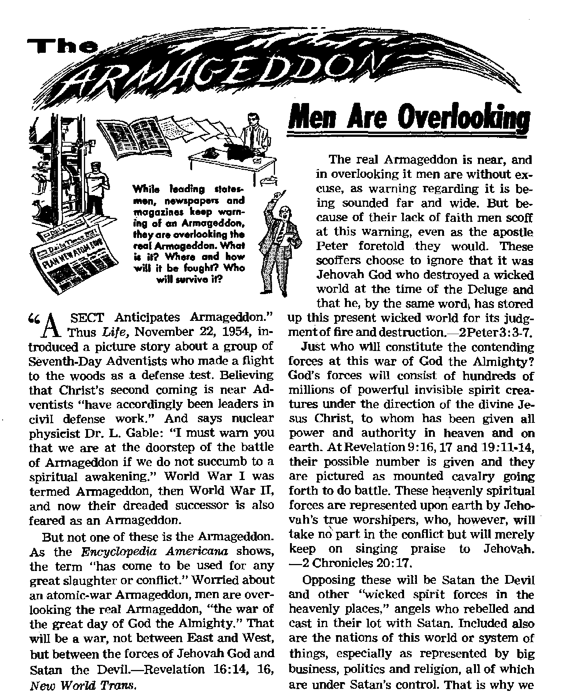
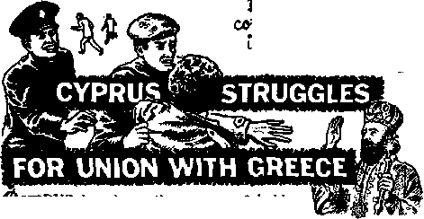

News sources that are able to keep you awake to the vital issues of our times must he unfettered by censorship and selfish Interests. "Awake I” has no fetters. It recognizes facts, faces facts, is free io publish facts. It is not bound by political ambitions or obligations; it is unhampered by advertisers whose toes must not be trodden on; it is unprejudiced by traditional creeds. This journal keeps itself free that it may speak freely to you. But it does not abuse its freedom. It maintains integrity to truth.
"Awake 1” uses the regular news channels, but is not dependent on them. Its own correspondents are on all continents, in scores of nations. From the four corners of the earth their uncensored, on-the-scenes reports come to you through these columns. This journal’s viewpoint is not narrow, but is international. It is read in many nations, in many languages, by persons of all ages. Through its page* many fields of knowledge pass in review—government, commerce, religion, history, geography, science, social conditions, natural wonders—why, its coverage is as broad as the earth and as high as the heavens.
“Awake 1” pledges itself to righteous principles, to exposing hidden foes and subtle dangers, to championing freedom for all, to comforting mourners and strengthening those disheartened by the failures of a delinquent world, reflecting sure hope for the establishment of a righteous New World.
Get acquainted with “Awake 1” Keep awake by reading “AwakeI”
PrELISHRL. SEMIMONTHLY By WATCHTOWER bible AND TRACT SOCIETY, INC.
117 Adams Street Brooklyn 1, N. Y„ U. S. A.
N. H, Knorr, Freti&ent Grant Suitkr, Secretary
Printing this issue: 1,750,000
Othir fasiuftt In wMeh "Awatat" It pullltk.i: S«n*tm«nthly—AfriXunn, Finnish, French, Orman, Hoiiandiflb, I Uli in, Nonreglan, Spanish. Swedish. Monthly— Dinlsh, firrpk. Jipanfsi*.
I'kriitilan,
Offices Yxarly iratMcrlpliffli ralr
America, ILS., 117 Adams St., RrnnMyn 1, N.Y. *1
Aiifrilfa, u Beresford Rd., HtrAthMil. N.8 W. $/-CnMdt, ISO Bridsclanl Ave., Pnrk Road P.O.,
Toronto 10, Ontario 11
England, 34 Craven Terrace, Tendon, W. 2 < .■'■
Mwr Zialanj, G.P.G. Boi 30. Wellington. C 1 Swth Africa,-Private Bag, EJandF.fo'nteln, Tvt,
Five cents a copy
ffimlttaa^i should bv sent 1 n office tn yunr r»nm-Iry In rompUanee with rofiuHUonu tn Euaranu'e sate delivery of money. Rend tun res urc arrrpied ai Brooklyn from countries where no office if locifwl. by In Leri) Hion al money order only. Ftiberrlplhm nites in dlfferoni coHMriaa an* here Misled 1n Inca! eurrenry. Motto of mpfritlon I with renevrat blank' Is armt at tefct two issues before suhseriptlotr ct plro*. Chant* of address when sent tn our effir* may be expected effective vrlUijn «ic month, Send your di w well as.new address.
Entered m wad d-claw matter at Brooklyn, N.Y., or March 3. 18?9. Printed In F.5 A.
|
What Does Right Belief Mean to You? |
3 |
Beware, You Bargain Buyers! |
17 |
|
The Armageddon Men Are Overlooking |
b |
Berggrav and the Pirates |
20 |
|
Why Armageddon Must Be Fought |
6 |
Cyprus Struggles for Union with Greece |
21 |
|
The Battle and Its Survivors |
7 |
Cry of "Enosls” Revived |
22 |
|
A Problem for Evolutionists |
S |
“Your Word Is Truth" | |
|
In Beautiful Hawaii |
9 |
The Rapid Growth of Mariolatry |
25 |
|
Bringing Happiness into Prisons |
IT |
Jehovah's Witnesses Preaeh in All | |
|
Is the Jury System on Trial? |
12 |
the Earth—Jamaica |
27 |
|
Influenced by Irrelevaneies |
14 |
Do You Know? |
2S |
|
Unprejudiced Tongues |
16 |
Watching the World |
29 |
TRUE religion is based on right belief.
But what is right belief? What does it mean to the average person? Right belief means faith in that which the Bible teaches; it means the rejection of man-made doctrines and traditions that conflict with God’s teachings. Yes, it means firm adherence to the truth. But who seek the real truth of the Bible today? Really, not many. That is why right belief means little to the average person. What does it mean to you?
Not long ago a noted clergyman admitted that people go to church with little regard for right belief. Writing in American magazine, Dr. Norman Vincent Peale said that doctrinal differences “are of little real significance to the average man today.” But why is this true? Could it be that it is not really any different with the clergymen themselves?
Look at the interfaith movement. This is a clergy-inspired attempt to merge Christendom’s religions, despite their conflicting teachings, into one vast world church or U.N. of religions. There is little or no regard here for right doctrine. Nor do clergymen encourage their parishioners to search for right doctrine. The traditional sign often seen in the United States says: “Go to church on Sunday.” But this leaves the thought that any church is all right, that any belief is all right. And so the attitude that it is all right to pay little or no attention to right belief grows in popularity.
How can the average man show regard for right belief when the clergy encourage him to accept just any belief? How can one expect the average person to make sure he has the right belief when the clergy abet or approve false belief? Yes, that is what they do.
Some months ago newspapers in America reported that presidential aspirant Adlai E, Stevenson had joined a Presbyterian church in Lake Forest, Illinois, on confession of faith. Then came some more news. The New York Times of December 18, 1955, reported: “Adlai E. Stevenson is still a Unitarian although he joined a Presbyterian church near his home in October, a Unitarian minister said today.”
That was not all. Time magazine of January 2, 1956, reported on what two Presbyterian and two Unitarian ministers had written to Stevenson. It was a public letter. Said the clergymen: “While we understand that you respect theologians, we know that doctrinal rigidity has never 11m-
ited the comfort you find in Christian faith, worship and fellowship.” Though “doctrinal rigidity” apparently had never limited Stevenson in his worship, did the clergymen come to the rescue of right belief? Or did they foster the attitude that any belief is all right with God? Said Time concerning this letter to Stevenson: “Four pastors—two Presbyterians and two Unitarians—made public a letter to him as-seating that he can belong to both churches without 'inconsistency/ ”
But can Adlai Stevenson really belong to both churches without “inconsistency"? Well, what does the Presbyterian Church teach? It teaches, for one thing, that the Bible is God’s Word, that it is truly a book inspired by God. But what about the Unitarian Church? It holds the Bible in esteem but it does not consider the Bible as God’s inspired and infallible Word.
Now what does Adlai Stevenson believe? He belongs to both churches.
The Presbyterian Church teaches that Jesus’ Shed blood provided the ransom sacrifice, that Jesus’ blood was a means to remove man’s inherited sin. But the Unitarian Church says “no," that Jesus’ shed blood is not necessary for man’s salvation. Unitarians believe that salvation comes through human endeavors along character-developing lines.
What does Adlai Stevenson believe? He belongs to both churches.
The Presbyterian Church teaches what is called the central doctrine of the Christian religion—the trinity. This is the belief that there are three distinct persons ,in one God. But the Unitarian Church says “no,” that there is no trinity, that God is not three in one, that God is One and that his Son is truly a son.
But what does Adlai Stevenson believe? He belongs to both churches.
Again the question is irresistible: can Adlai Stevenson really belong to both churches without “inconsistency"? Someone is wrong. Both churches cannot be right on these three doctrines. Are people afraid to call error “error”? Is it that people do not think it nice to call falsehood “falsehood” when it pertains to religion? Whose duty is it to uphold right belief? It is the duty of each person. That is what God tells us: “Make sure of all things; hold fast to what is right.” This is what we should do regardless of popular feeling. —1 Thessalonians 5:21, New World Trans.
So Adlai Stevenson has done nothing unusual. He is doing the normal, the popular thing in religion. He is doing just what the average person does. But does that mean that you should follow the crowd? No, do not be like the people in Jesus’ day. They had zeal but not right belief. Said Christ’s apostle: “I bear them witness that they have a zeal for God; but not according to accurate knowledge.”—Romans 10: 2, New World Trans,
Soon now God’s war of Armageddon will litter the earth with over two billion “slain of Jehovah” because the popular way was not to “make sure of all things,” not to “hold fast to what is right,” not to search for “accurate knowledge.” (Jeremiah 25; 33, Am. §tan. Ver.) Those who want to survive Armageddon into God’s new world should awake and think. What are we to think of religious teachers that do not care whether one believes what is right or what is wrong? What are we to think of a religion that does not encourage one to make sure of right belief? We can only think that such popular religion is false religion.
True religion is the way of “accurate knowledge,” the way that leads to life. If right belief means nothing to a person, that attitude really means death. So seek right belief. Make sure of your belief as if your very life depended upon it. It does.
MAY 22t 1956
read that “the whole world is lying in the power of the wicked one,” and why he is' termed “the god of this system of things.” —Ephesians 6:12; 1 John 5:19; 2 Corinthians 4:4, New World Trans.
There are three main reasons why God will bring Armageddon to pass. First of all, it is Jehovah's payoff to the wicked. As the righteous Supreme Sovereign he will give the wicked their just due, destruction, for he has promised that “all the wicked will he destroy.” Armageddon will square all accounts, end all oppression and avenge all blood unrighteously shed, whether of man or of beast. It will cleanse the earth of the bloodguilt of men and nations.—Psalm 145:20; Isaiah 26:21.
Secondly, Armageddon will be fought to deliver the righteous, even as the destruction of Pharaoh and his hosts in the Red Sea brought deliverance to the nation of Israel. As Jehovah worked wonders in the days of Joshua, Gideon, David and others, so again he will “do his work, his strange work; and bring to pass his act, his strange act,” bringing freedom and deliverance to all lovers of righteousness.—Isaiah 28:21.
And, most important of all, Armageddon will be fought to prove that Jehovah is the Supreme Sovereign, that he is the God almighty in power and perfect in justice, love and wisdom. As he stated more than sixty times in the prophecy of Ezekiel, "They shall know that I am Jehovah.’ When Jehovah sent Moses to Pharaoh with the message that Pharaoh should let the Israelites go into the wilderness to worship Jehovah, Pharaoh contemptuously replied: “Who is Jehovah?” Ten plagues were not enough to teach him, but he did learn as the waters- of the Red Sea covered him and his armies.—Exodus 5:2, New World Trans.
Today there are many like contemptuous rulers, visible and invisible. At Armageddon Jehovah will hurl his answer in their face by destroying them, thus answering the psalmist’s prayer of some three thousand years ago, that he would make them to “know that thou alone, whose name is Jehovah, art the Most High over all the earth.”—Psalm 83:18, Am. Stan. Ver,
It might well be asked, Why has Jehovah waited three thousand years to answer that prayer to vindicate himself? Here again, God has had more than one good reason. In the first place God tells us that he has a time for everything. (Ecclesiastes 3:1-8) The Bible also shows that Satan boasted that he could turn all men away from the worship of Jehovah. To give him full opportunity to prove his boast God has permitted Satan and wickedness to remain and has allowed the innocent to suffer. During all this time the lovers of righteousness .have proved Jehovah true and the Devil a liar by remaining faithful to God in spite of all the Devil could bring against them, two outstanding examples being Job and Jesus Christ. This issue could not have been met any other way. Also, during this time God has provided the legal basis for releasing lovers of righteousness from death, the ransom sacrifice of his Son through his death on the torture stake. Additionally, he has been selecting and training 144,000 humans to serve as kings and priests with Christ for a thousand years.—Revelation 14:1, 4; 20:5, 6.
Further, this delay has permitted the issue to be made known world-wide and has also allowed Satan to build up the most powerful organization possible, all of which will make Jehovah’s victory more noteworthy. As God told Pharaoh: “For this very purpose I have let you remain, that in connection with you I may demon-
strata my power and that my name may be published throughout all the earth.” The Bible record shows that back there Jehovah's fame did spread far and wide, —Romans 9:17; 1 Samuel 6:6, IVew World Trans.
That Armageddon is at the door the fulfillment of Bible prophecy clearly indicates. Especially does Jesus, by his great prophecy recorded at Matthew 24 regarding the sign, definitely point to our day. We find among its fulfilled features world wars, food shortages, earthquakes, increase of lawlessness, persecution of Christians and the preaching world-wide of the good news of God's kingdom. Paul’s prophecy is also being fulfilled, that "in the last days critical times hard to deal with will be here. For men will be lovers of themselves, lovers of money, self-assuming, haughty, blasphemers, disobedient to parents, . . . lovers of pleasures rather than lovers of God, having a form of godly devotion but proving false to its power.” —2 Timothy 3:1-5, New World Trans.
And where will Armageddon be fought? Throughout the whole earth and its immediate vicinity. This is apparent from Revelation, chapter twelve, which tells of Satan and his demons’ being cast out of heaven and down to the vicinity of the earth by Christ and his angels. This prophecy and its context, telling of the nations’ being angry and Satan's knowing he has but a short time left, also locates Armageddon in our day. In the prophecy of Ezekiel, chapters 38 and 39, Satan and his hosts are identified as Gog and his forces, and their location—in the immediate vicinity of the earth after their having been cast out of heaven—as the land of Magog.
The Battle and Its Survivors
There being no question as to the outcome of Armageddon, what next concerns us is the nature of the conflict. From Bible prophecies as well as prophetic dramas of what God did long ago we can gain somewhat of an idea. Armageddon will come upon God's enemies as a shocking surprise, as a thief in the night, as travail upon a woman, and they will not.be able to escape. There will also be paralyzing fright, collapse of governments, panic, wild anarchy, with every man’s hand against his neighbor. Men will be stricken with loathsome diseases. Then the earth will reel to and fro like a drunken man, there will be upheavals and tremors representing forces, equal to the explosion of millions of atom and hydrogen bombs. There will be terror in the air, on earth and in the sea. And after all God's visible enemies are destroyed Satan and his demons will be bound and thrown into an abyss for a thousand yeaiu.~l Thessalonians 5:2, 3; Psalm 46:2, 3; Revelation 20:1-3.
Who in all will perish ? Who will survive, and why? Obviously, all those opposed to Jehovah God and his kingdom will be destroyed, as well as all oppressors of their fellow men. All those who are responsible for wars between nations or who engage in them will also be destroyed, for Armageddon will be the final war; by means of it God "maketh wars to cease unto the end of the earth,” and will destroy all war equipment. (Psalm 46:9) And since Armageddon is primarily for the purpose of making all to know who Jehovah is, those who now willingly refuse to know Jehovah will be made to know him at Armageddon. However, then it will be to their everlasting destruction, while to learn to know him now means everlasting life. Therefore all who support the present wicked system of things, knowingly or unknowingly, willingly or unwillingly, will fall at Armageddon, even as Jesus emphasized when he said: "He that is not on my side is against me.” —Matthew 12:30, New World Trans.
That comparatively few of earth's in-
habitants, though it may be millions, will survive Armageddon the Scriptures clearly indicate* Only eight survived the Flood, at which time there may have been millions on earth* We are also told that “the slain of the Lord shall be at that day from one end of the earth even unto the other end.” Jesus also foretold that it wilibe the greatest tribulation the earth has ever seen or will yet see and that "unless those days were cut short, no flesh would be sav^d; but on account of the chosen ones those days will be cut Short.”—Jeremiah 25:33; Matthew 24; 21, 22, New World Trans.
God’s Word also shows that worldly religion, especially that which claims to be Christian, will go down first at Armageddon, perishing at the hands of the antiJehovah political elements such as communism. They are described as ten kings who will devastate and bum with fire the harlotlike organization of false religion.—Revelation 17:16, 17.
And who will survive? All who love Jehovah with their whole heart, mind, soul and strength and who love their neighbor as they do themselves. All who heed the call: “Get out of her [Babylon, Satan’s organization], my people, if you do not want to share with her in her sins, and if you do not want to receive part of her plagues.” All those who obey the command: “Seek ye Jehovah,” "seek righteousness, seek meekness: it may be ye will be hid in the day of Jehovah’s anger.”—Revelation 18:4, New World Trans.; Zephaniah 2:3, Am. Stan. Ver.
And what will follow Armageddon ? God’s Word tells us. Then “the earth shall be full of the knowledge of Jehovah, as the waters cover the sea.” Then “the meek shall inherit the land, and shall delight themselves in the abundance of peace.” Then “the righteous shall inherit the land, and dwell therein for ever.” And then God "will wipe out every tear from their eyes, and death will be no more, neither will mourning nor outcry nor pain be any more.” Yes, then ‘the righteous will be in authority and the people will rejoice.’ —Isaiah 11:9; Psalm 37:11, 29, Abi. Stan. Ver.; Revelation 21:4, New World Trans.; Proverbs 29:2.
As Jehovah provided an ark for the protection of Noah and his family, so today he has provided a place of safety, a new system of things, which the Greater Noah, Jesus Christ, is building, and in which are found the members of the New World society. These have heeded the call to flee Babylon, they are seeking Jehovah, righteousness and meekness, and they prove by their works that they love Jehovah with their whole heart, mind, soul and strength and their neighbors as themselves. They will be glad to help you to do likewise.
^9 fiat
“Not only must the first organism have arisen through the chance concurrence of billions of unintelligent atoms; it must have arisen completely furnished with cytoplasm, nucleus, chromosomes, and genes, and with the perfect mechanism of reproduction. Unless this were so, no reproduction could have occurred in the first organism, and there would be no offspring, no second generation; life would have become extinct immediately, and there would he no life today.” Further: ‘‘Reproduction . * . implies intelligence. This intelligence, however, resides neither In the speck of protoplasm called ‘organized matter’ nor in the inorganic elements.” —God and His Creatures, by Celestine N. Bittie, page 140.
iwtow of Hawaii makes most people think of pineapples, tropical beaches, swaying palm trees, brown-skinned beach boys riding the surf at Waikiki and lovely maidens dancing the ‘hula’ to the smooth flow of pleasant Hawaiian music. All these things and many more are here to greet the visitor.
Hawaii is a place of many contrasts, from its sun-swept white
beautiful Hawaii
BY "AWAKE!" COJMfiSPONDeNT IN HAWAII
sand beaches, bordered by the blue Pacific, to towering snowcapped mountains reaching an altitude of nearly 15,000 feet. And amidst all this beauty there are also raging volcanoes that often erupt, spuing hot molten lava into the air, which flows over acres and acres of rich farm land, ruining it for the production of sugar cane and bananas.
Hawaii is called the "Paradise of the Pacific” because of the ideal weather conditions, as well as the many beauties of creation. It is also a land where the sun shines most of the time, yet rain clouds are almost always to be seen hanging over the mountains. From the rain in the mountains the wind blows mist down into the cool valleys, producing brilliant rainbows at any time of the day.
Hawaii being the melting pot of the Pacific, the customs of the people are many and varied. The Hawaiian hula is danced by women of all nationalities, and no Hawaiian holiday would be complete without the grass-skirted hula dancer. Likewise the months of June and July could not pass without one’s seeing the many Japanese Bon festivals that are carried on throughout the islands in worship of the dead. Chinese funerals held here remind one from the Western world of a carnival and its loud music. Koreans, Filipinos and most of the remaining inhabitants claim to be Christian, and this accounts for a variety of forms of worship.
It is interesting to talk to the so-called heathens and to hear them say that "Christianity” is not different from the religion they and their ancestors have practiced for many years. What they fail to realize is that there is a difference between the religions that claim to be Christian and true Christianity. Thus, Jehovah’s witnesses in Hawaii carry on their work for a double purpose: First, to vindicate Jehovah's name and kingdom; and second, to help those of all religions to see that the Christianity that is taught in God’s Word the Bible is different from the false practices of Christendom.
Yes, tourists in Hawaii will find that the same work is carried on by Jehovah’s witnesses here as throughout the rest of the
world. One tourist, identified as a new arrival by the many beautiful leis she was wearing, was passing the branch office in Honolulu, Seeing the sign “Watch Tower Bible & Tract Society,” she stopped and exclaimed: “What! Are those people over here too!”
Indeed they are! Jehovah’s witnesses have been in Hawaii for over twenty years, preaching the good news of God’s kingdom to all who will listen. And listeners come from people of all nations and languages; so the Hawaiian branch carries literature in twenty languages and dialects. Where there was only one congregation as recently as 1938, there are seventeen congregations now, with a total of 948 publishers.
Christian assemblies are very zealously supported by Jehovah’s witnesses, whether they be large international gatherings or smaller circuit meetings. The enthusiastic spirit of these unified gospel preachers impresses outside observers and frequently proves quite contagious. From one such assembly a publisher reported:
“Living in a hotel dose to where the assembly was held on the island of Maui, I met a man who had lived in the hotel for eight years, well mannered, intelligent, and speaking English very well. He became curious and started to ask questions, I told him the purpose of our being there, and of the new world. I invited him to the opening day of our assembly and he gladly accepted. This being his first time to attend any of our meetings made it rather difficult for him to understand some of the talks and why they were given. He was impressed, however, by all of the witnesses calling each other brother and sister. He asked: 'Why do you call them brothers and sisters when they are of different nationalities?’ This was explained to him, and he marveled at the Christian love that exists among the witnesses.”
The man was present on Saturday while field service was being discussed and offered to take the witnesses to their territory about two miles away. While they engaged in field service, he did so in his own way, going about telling his friends that Jehovah’s witnesses were offering magazines to the people so they could learn of God and live forever in happiness in the new world. He attended the showing of the film “The New World Society in Action,” and, as the report continues:
“He was amazed at seeing the great crowd of witnesses from all nations at Yankee Stadium and the association of people of all races in unity and harmony. When the movie was over the expression on his face was something to behold. He looked as if he were trying to get everything straight before he spoke, and when he did speak his first words were*. ‘How can I become one of you and call you brothers and sisters?' ” A home Bible study was started.
Not all experiences at assemblies have the same results, but the witness is given so that those who are meek and teachable can manifest themselves, and those who are of a different class can show that too. After a very favorable week of advertising one public lecture by radio, through the press and from house to house, a sizable crowd of people filled an auditorium to hear “Does God Really Care?” When the lecture had gotten under way two gentlemen of the “doth” with their collars on backward proudly marched through the door, down the full length of the auditorium and seated themselves in the very front row. After scanning the crowd to see how many of “their Sheep” were there, they settled back apparently to listen. Their facial expressions showed, however, that the message they were hearing did not tickle their ears.
After the lecture Was dismissed they were invited to stay for the rest 6f the session. It was certain, though, that they were not there to leam, as one of them wanted to argue and presented the point that the kingdom is within you. The brother with whom he was talking asked: “But to whom was Jesus speaking there?” “Does it matter?” was the reply. “Well, I Should say it does, as Luke 17:20 says the Pharisees demanded of him. Now would you say the kingdom was in their hearts when they had him killed for preaching the Kingdom message? You will also notice that the margin says that the Kingdom is among you.”
Being confronted with this information one of them tried a different approach, sneeringly stating: “You people Should vote.” “And we have, sir, for Jehovah’s kingdom under his Son Christ Jesus.” Not satisfied with that, he said: “But you need to take part in the earthly governments.” The brother's reply was:
“No, that would be hypocritical. You see, Daniel 2:44 states: ‘And in the days of those kings Shall the God of heaven set up a kingdom which shall never be destroyed, nor shall the sovereignty thereof be left to another people; but it shall break in pieces and consume all these kingdoms, and it shall stand for ever.’ Also, Psalm 2:1-4 says: ‘Why do the nations rage, and the peoples meditate a vain thing? The kings of the earth set themselves, and the rulers take counsel together, against Jehovah, and against his anointed, saying, Let us break their bonds asunder, and cast away their cords from us. He that sitteth in the heavens will laugh: the Lord will have them in derision.’ (Am. Stan. Ver.) Could a true Christian be asked to support the existing powers when it is so plain that his kingdom will consume them and they will cease to exist?”
It was time for the next session. The crowd returned to their seats, less two.
Bringing Happiness into Prisons
This is a land of a generally mild cliroate and a pleasant people, but, because it is still a part of the old world, sometimes the dispositions of people become violent, and thus a prison system is necessary. However, not even these prisons are beyond the reach of the joyous Kingdom message. Three years ago a few studies were started in the prison with some of the Inmates, and the improvement of these men after participating in these studies was very noticeable. Three requested baptism. Permission was granted and the baptism took place behind the prison’s walls.
Soon after this the studies were stopped by the officials of the prison. However, the brothers were granted three nights a week to gather and study as they wished. So that things could be done in a proper and orderly way, a congregation was formed and the most mature brother was selected as the overseer, and the other two also were appointed to positions of oversight and meeting conductors.
While at first some thought that the stopping of the studies would hinder the progress of these brothers, it has really made them conscious of their responsibilities before Jehovah, and they have gladly accepted them. Their regular meetings usually are attended by fifteen fellow prisoners, this being the limit for any inmate gathering that is unattended by guards. This congregation reports field service every month, just as the others do.
Thus, the Kingdom message is being preached here in these pleasant islands, as in all the rest of the earth, for the purpose of a witness before the final end of this system of things and the complete vindication of the name of Jehovah. i >i if: opinijj; ut some il r,. '‘Suiiic [jeu-L i>;v io ci:-‘isi?2C whuk- t.’i.d
v,;r. Hit- . ।Un ll’li’ ui ul> ariicli- Jfr Illi.-October 21, 1955, issue of U.S. afews <£, World Report. The article wezBHfc to say: “The system of trial by BBT as old as Anglo-Saxon justice, is coming under the eye of ‘reformers’ who feel that something should be done about it.”
Some
learned men ta TUfi IIIDV GVC7T1II fill TOIJII of the news‘ would put lw lllEi JII III wlvlCiul UJI llUnli papers. This
the jury sys- was use
tern on trial for its very life. A numq|^H^ secret recording instruments to eaves-of judges have become dissatisfied witB^frop on the supposedly private delibera
te Way the jury system works. One prominent judge has urged the abolition of all jury-trials- in civil cases and the limited use of juries in criminal cases. Then, too, some lawyers have tried to sound the death knell tor juries in civil cases. They fear that juries are becoming far too generous in granting damages in lawsuits. Because the number of would-be reformers seems to be growing, a group of people supervised by two professors of law from the University of Chicago recently began an extensive study of juries.
The purpose of this study is to find out, once and for all time, three things: (1) How the jury system really works, (2) whether the jury system, no matter how valuable it has been in history, is the best mechanism for carrying the judicial loads placed upon it today, and (3) whether people as a whole are satisfied or dissatisfied with juries.
To make its study a thorough one, the University of Chicago group
bus sejji inure Ihan ;i thousand question-iftfttcs to former jurors Io see if I bey ur> deNBhjn Ibi: law case in Clinch they served on tlMfcry. Judges at jury trials are being askefflmrite down the verdict they would give^BBey were trying the case without a jur«Bfiis is then compared with the i^M^erdict. One feature of this study pWently bounced right into the public’s eye by way tions of juries deciding six cases in Wichita, Kansas. The purpose of the eavesdropping was to determine whether a jury .used solid evidence and reasoned argument to reach a decision or whether it was swayed by courtroom showmanship. But the eavesdropping, though prompted by good motives, was not appreciated. When senators learned about the eavesdropping, the matter became a political bombshell.
Why Developed and Defended
Why all the outcry about eavesdropping? Because, as a recent issue of Awake! has shown, the jury system comes from the deep reaches of history. It has come to be a rather sacred institution in the minds of many. Tampering with juries is not popular. For juries have often come to the aid of the common man when he h as'been threatened by the tyranny of kings and rulers. Thus it was that the United States Supreme Court in a recent decision (Toth vs. Quarles) said in its majority opinion written by Justice Hugo Black:
“The premise underlying the Constitutional method for determining guilt or innocence In Federal courts is that laymen are better than specialists to perform this task. This idea is inherent in the institution of trial by jury. Juries fairly chosen from different walks of life bring into the jury box a variety of different experiences, feelings, intuitions and habits. Such juries may reach completely different conclusions than would be reached by specialists in any single field, including specialists in the military field. On many occasions, fully known to the founders of this country, jurors—plain people—have manfully stood up in defense of liberty against the importunities of judges and despite prevailing hysteria and prejudices. The acquittal of William Penn is an illustrious example.” —New York Times, November 8, 1955.
So the main reason legal scholars hold the jury system to be of vast importance is this: that it is the way in which ordinary citizens can stand between the will of a powerful government and an ordinary citizen.
Though the public wants the law to be fatherlike, aloof and impartial, it* also wants the law to be flexible, understanding and humanized. The public, taking stern judges seriously, assumes that judges will apply hard and fast law to human facts; so the people feel they must turn to the jury for relief from such dehumanized justice. The jury system, then, seems to have been developed in large part because it serves two purposes: (1) It preserves the basic legal dogma in appearance and (2) at the same time it permits a pliancy, flexibility or elasticity that is impossible to the dogma but that human nature demands. In other words, the jury system, theoretically, makes it possible for the public to eat its cake and have it too.
But though the jury system has made possible a kind of democratic administration of justice, it has also brought about some evils. So an understanding of the weaknesses of, the jury system will give one a glance behind scenes at what plays a large part in making the world of justice go round, and one will get an idea of why it stalls from time to time.
Unanimous Verdict and Incompetency
One of the shortcomings of the jury system, reformers believe, is the unanimous verdict. It can result, they say, in only two alternatives: disagreement and failure to reach any conclusion or a sacrifice of opinions conscientiously held by some jurors. A juror's sacrificing his good conscience for the sake of unanimity is an obvious evil. The difficulty presented by the unanimous verdict was once phrased by the eminent jury lawyer Rufus Choate. “Jurors,” he said, “are like twelve human dice which must all turn up one way or there is no verdict.”
One of the most powerful arguments propounded by reformers is that a jury, made up of average persons, does not possess the art of judging or ajialyzing evidence, that it is not fitted by training or capacity to decide, fairly and intelligently, doubtful questions, The butcher, the baker and the farmer are suddenly called upon to become judges of facts, all without training for their new job. To make matters worse, reformers contend, jurors are Often called upon to decide questions far beyond their grasp.
“The significance of the jury," says one advocate for reform, “,is that the grossest amateurism dominates the prosecution of crime.” Another speaks of the “too flexible moods of twelve untrained men.” One
of the most prominent judges advocating reform is Judge Jerome Frank, who was appointed in 1941 as a judge on the United States Circuit Court of Appeals for New York, Vermont and Connecticut. Says Judge Frank of juries: “A better instrument could scarcely be imagined for achieving uncertainty, capriciousness, lack of uniformity, disregard of former decisions—utter unpredictability.”
Judges in lower courts not infrequently have their decisions reversed in higher courts. With this in mind, Judge Frank says of juries: “No one can be fatuous enough to believe that the entire community can be so educated that a crowd of twelve men chosen at random can do, even moderately well, what painstaking judges now find it difficult to do.”—Law and the Modem Mind.
So the view taken by reformers is that the average person is not competent to do the work required of a juror. They back up this stand further with an interesting argument, saying that the common law has never, in all its history, conceded that the average person was competent to act as a judge of anything. In fact, they say, the conception of the witness-juror presupposed a special knowledge on the part of the person called into that service; and such persons were chosen, not at random, as is done today, but from specially selected lists of persons who had special information on the subject matter.
If the reformers need more ammunition in their campaign against the jury system, they can often get it from ex-jurymen. Thus one former juror, Robert Steward Sutliffe, writes in his book Impressions of an Average Juryman: “Some of the men serving on juries would hardly be classed by qualified judges as either impartial or competent, if those judges could have an opportunity to hear what goes on in the room set aside for their deliberations.”
But no one will say exactly what goes on in the jury room, and the jury does not have to explain how it reached its decision. Now anyone who tries to eavesdrop on the jury may find himself put in jail. On what basis does a jury operate, then? One professor of law, who is an advocate of reform in legal procedure, put it this way: “In a vast majority of cases, the verdict is a complete mystery, throwing a mantle of impenetrable darkness over the operations of the jury. Whether the jurors deliberately and openly threw the law into the discard, and rendered a verdict out of their heads, or whether they tried to apply it properly but failed for lack of understanding—these are questions respecting which the verdict discloses nothing. No one but the jurors can tell what was put into it and the jurors will not be heard to say. The general verdict is as inscrutable and essentially mysterious as the judgment which issued from the ancient oracle of Delphi. Both stand on the same foundation—a presumption of wisdom.”
The tendency to be swayed by irrelevancies is cited as another major weakness of juries. Advocates of reform who would like to see highly skilled judges take over most of the work jurors now do will admit that judges can be just as biased and prejudiced as jurymen. But, they say, there is a far greater tendency for a judge to try to be impartial; and certainly judges are more successful in avoiding the pitfalls of irrelevancies. Look at public opinion, reformers say. “Public opinion,” writes Jeremiah W. Jenks in The Guidance of Public Opinion, “seems to be a mixture of sense and nonsense, of prejudice, of more or less clearly defined feelings coming from influences ... of sentiment rather than . . . judgment.”
So people, blinded by traditions and hidebound by convention, are at the mercy of a hundred partialities of which they themselves are often unaware. Thus the book Day in Court counsels lawyers: “An advocate must remember that jurymen are all human; they carry their prejudices into the jury-box just as surely as they carry their arms and legs. Some are hardened by their own ill luck and consequent contempt for their fellow-men, and have a natural dislike to see anybody succeed in life; some are entirely lacking in that important factor in a man’s make-up, which is called the ‘milk of human kindness’; others are generous, humane, open-hearted, openminded; some are intelligent, others stupid.”
Anyone who observes juries in action, reformers say, can see how irrelevancies influence them. A jury of landlords will deal unjustly with tenants. Farmers invariably side with farmers. Many persons dislike great corporations; as a result big corporations often take a beating unjustly at the hands of a jury, the jury awarding the "little man” an unreasonably large sum of money. Many jurors have prejudices against those of certain religious faiths. And one nationality is prejudiced against another.
As to the effects of courtroom showmanship, one critic of juries says;, “The whole setting and background of a jury trial is on a par with the make-believe spirit of the stage. And the sad ending of it all is that these mechanics and preparations are in favor because of the knowledge that such is the scenery that draws a jury’s interest and (all too often) produces favorable conclusions.”
Trial by Newspaper
But that is not all. There is the newspaper. What is printed in the press, reformers say, is ultimately seen by the jury; and so, one way or another, public opinion permeates the courtroom and subconsciously the jurors’ minds. One of America’s top-flight trial lawyers, the late Uoyd Paul Stryker, wrote in his The Art of Advocacy:
“We have now with us the half sister of lynch law: the trial by newspaper. It is an outrage and a blot upon our civilization, and it is one with which no advocate can contend on equal terms. ... In this newspaper trial, abetted now by the radio and soon (if the sponsors have their way) by television, no holds are barred. From the morning papers the jury may read the full documents excluded the day before, or follow in detail what a witness, not allowed to testify, would have sworn to if he had been permitted.
“Thus are the rules of evidence both thwarted and surmounted, and if there is any part of our jurisprudence more indispensable than another to the administration of justice, it is the law of evidence. Through the centuries there has been put together, bit by bit, by Anglo-American judges, the rules that govern what may and may not be put before the jury in the courtroom. Based as they hre upon the principles of inductive logic, the philosophy behind them is that laymen are not logicians and therefore should be prevented from hearing facts from which illogical conclusions are irresistible. These rules of evidence are not the mere technical inventions of judges and lawyers, they are the instruments with which the jury system is made to work and without which a jury trial would be a shambles not unakin to mob rule.”
According to some advocates of reform, the lack of quality in the jury system is overshadowed by lack of quantity. But this in itself leads to lack of quality. Thus David VJ. Peck, tile presiding justice of the Appellate Division of the New York State
Supreme Court, First Department, raises the question: “Do Juries Delay Justice?” Writing in the New York Times Magazine of December 25, 1955, he answers “yes.” Said Judge Peck: “The cause of delay is the jury system. It is the inherent slowness of trial by jury [it averages three times as long as a trial before a judge without a jury], a pace which cannot keep up with the flood of cases coming into court. . . . The consequences are missing withesses and failing memories at the time of trial, miscarriages of justice, and a denial of timely justice which is the essence of true justice.”
And so trial by jury has spawned a number of evils. The tendency of jurors to be swayed by popular opinion, feelings, sentiments and prejudices is a problem increasingly difficult to remedy. Understandably, Professor Clarence N. Callender of the faculty of the Wharton School, University of Pennsylvania, wrote in The Selection of Jurors: “In the opinion of many the jury system is on trial. It may be that it will ultimately be rejected. In the meantime, if it is to retain the respect of the community, it ought to be improved in every possible way.”
What will the outcome be? Victory for the reformers? Not likely. Even if the results of the University of Chicago study of juries should reveal unsuspected, evils of trial by jury, observers believe no change is in the offing. Instead, they say, it seems probable that the United States Congress will make a crime of all forms of eavesdropping on juries, and thus spell out another safeguard to protect the jury system as it now exists.
But whatever happens we now have a better understanding as to why justice, as administered under the present system of things, is not always justice. Above all, our appreciation is heightened for Jehovah’s incoming new world of rightedusness. How thankful we can be that “the One decreed by God to be judge of the living and the dead,” Christ Jesus the King-Judge, is preeminently qualified for the job! “The spirit of Jehovah shall rest upon him, the spirit of wisdom and understanding, the spirit of counsel and might, the spirit of knowledge and of the fear of Jehovah. And his delight shall be in the fear of Jehovah; and he shall not judge after the sight of his eyes, neither decide after the hearing of his ears; but with righteousness shall he judge.”—Acts 10:42, New World Trans.; Isaiah 11:2-4, Am. Stan. Ver.
<[, A good many people with unprejudiced tongues have tried nearly every kind of food. Big-game hunters who have tried elephant meat report that it makes good eating. Some epicures prefer the base of the trunk. During the siege of Paris in the Franco-Prussian War, nearly everything that lived wound up in the stewpot. Elephant trunks, which were considered the finest of the meat, sold for forty-eight francs a pound—an unheard-of price in those days. Explorer David Livingstone was fond of boiled elephant’s foot. Those who have sampled rhinoceros say it tastes a good deal like beef, with an added flavor all its own. The hippopotamus is something else again. Hippo meat has the fine grain of beef. Pretorius, who hunted in the jungle for more than forty years, ranks fresh hippopotamus meat as his alltime favorite dish. Crocodile meat has not only been eaten but praised. Canned rattlesnake,, though not exactly setting crepe suzettes on fire, seems to enjoy a slow but steady sale. And it is reported that some California Indians are amazingly fond of barnacles. With an unprejudiced tongue it seems that one can savor everything from fried bees to the chrysanthemum salads enjoyed so much by the Japanese.
urday shopping and tourist crowds dashed for cover. When the truck was finally halted, three people lay dead, fourteen were injured and seventeen cars were demolished. An official investigation disclosed that inferior brakes stamped with a counterfeit Bendix-Westinghouse trade-mark were the cause of the accident.
While the Bendix-West inghouse brakes are made under rigid controls and designed to give over a million pedal applications without rupture or failure, the counterfeit brakes failed in tests after 8.000 applications and no counterfeit brake functioned safely after 27,000. Fake replacements of standard automobile equipment with substandard reclaimed materials are unquestionably significant factors in the growing accident rate. Over twenty percent of the cessories. sold annually in the United States, an estimated $500 million worth, are said to be counterfeit.
Since World War n counterfeiting has increased at an alarming rate, infesting practically every retail market In the UnitStates, Upward of S2 billion a year are swindled from the American public by counterfeiters. During a threemonth period over three million reconditioned radio and television tubes were represented as new brand-name products and sold in New York alor-c. One official said: "The demand for packaging is so brisk that shady dealers are taking genuine tubes out of the protecting wrapping and reselling the little paper boxes to counterfeiters for a nickel apiece." Burned-out television picture tubes veeoated with a chemical and given a weak electronic boost are being sold to a gullible public for twenty dollars each. The buyer can consider himself fortunate if the tube lasts two weeks. '
ITe extent of counterfeiting in pharmaceuticals is appalling. Unethical pharmacists, who substitute inferior and diluted drugs in prescriptions and fake expensive tablets, hormones, antibiotics and barbiturates, cheat the public and leading pharmaceutical firms out of $50 million th $120 million a year. Cari K. Kaiser, manager of trade relations for Smith, Kline & French, said that a fifteen-year survey showed that
12 percent of all prescriptions written for his firm’s products were filled with counterfeits. Spot investigations showed that “27 of 219 prescriptions presented for trade-marked specialties were filled with imitations”; that “druggists with good businesses in better-class neighborhoods— those whom you would least suspect of unethical conduct—are the chief culprits.” In fact, investigations show that if you are a steady customer you are more likely to be cheated than a stranger. Dishonest druggists are suspicious of new patrons.
The number of brand-named products currently being counterfeited may come as a surprise to those who have associated counterfeiting only with the printing of fake money. One authority lists the following items as currently being faked: “Singer sewing machines, Coca-Cola, all top radio and TV tubes, Bulova watches, Chanel perfume, vacuum-cleaner parts and Victor records. Other entries on the list,” he says, “have been Dobbs and.Knox hats, Swift’s margarine; White Rock soda, Revlon nail polish, Leica cameras, Good Humor ice cream, BVD underwear, Pepperell bed sheets and all leading gasolines.” He adds: “Bottles bearing labels of popular condiments, liquors and hair tonics are refilled with cheap substitutes as fast as they are emptied in too many good restaurants, bars and barber shops.”
Dr. Stephen Ladas, an expert on trademarks, declared: "The traffic in phony American products is even greater abroad. Organized counterfeiting rings are operating in South America, Hong Kong, Japan and Turkey. Many Latin-American markets are so glutted with fakes that American companies have no outlets for genuine exports.” An incomplete list of counterfeit items sold overseas includes “Arrow shirts, Lux soap, Campbell soup, Quaker Oats, Interwoven socks, Wrigley chewing gum, Gold Medal flour, Kodak film, A. E.
Staley cornstarch, Seven-Up, Parker pens and U. S. Playing Cards,”
Ignorance and credulity are the best friends counterfeiters have. Alfred Capus wrote of the artist Corot that “he was the author of 3,000 paintings, of which 10,000 had been sold in the United States.” This is not difficult to believe when one is confronted with nine Mona Lisas, all of which look as if they were painted by Leonardo da Vinci himself. While some faked articles are as obviously counterfeit as a waxed banana, yet others are so meticulously duplicated that unless they are subjected to scrutiny under infrared light and chemical tests it is impossible even for experts to detect the fraudulent items.
For example: To the naked eye and even chemical analysis, there is absolutely no difference between synthetic and natural rubies and sapphires. The chief method of distinguishing them is by microscopic examination. But in price range, however, there is a great difference. A five-carat synthetic ruby may be worth less than five dollars a carat; while a natural one is worth $5,000 a carat. Only too often gem stones turn out to be nothing but cut glass. An American aviator bought his fiancee an unusually exotic gem stone at a bargain price. The soft black stone kept coming loose. The stone was analyzed. It turned out to be nothing but an extra-hard piece of licorice candy.
While there is no such thing as a synthetic diamond, there are mineral substitutes often mistaken for diamonds. Swindlers often represent the zircon as a diamond, but in actual value there is no comparison between the two. Frequently, jewelers get taken by the synthetic rutile. It has a little more sparkle and fire than most diamonds, but is not nearly so hard. The synthetic stone at best is not worth
more than five dollars. But many a jeweiei-has, out of ignorance or carelessness, paid $1,500 or more for one. The average cost of a diamond engagement ring is $225. For this price most women think they are getting a perfectly cut, blue-white diamond. An almost flawless one-carat stone with just a dash of blue in it may cost upward of $3,000.
Other products easily counterfeited are pearls, watches and perfume. About 50,000 pearls a year are tested for dealers and laymen. Recently, two American ladies picked up in the Philippine area an underseas “bargain” for $20,000. They brought home two heaping chests brimming with pearls and a pearl necklace. The pearl necklace and bracelet looked cultured to the naked eye of an expert, but after an X-ray process it was found that not a single pearl was natural. The whole batch of “pearls” was worth less than $600.
Unscrupulous local dealers strike at unguarded moments, particularly at rush hours, “bargain days,” “sales” and the Christmas season. During the 1954 Yule season an estimated 200,000 fake Bulova watches were unloaded on an unsuspecting public. The counterfeits were “one-jewel Swiss movements in aluminum cases and were worth $3.30. They were sold for twenty-three dollars and up.” The accomplices in this crime were given suspended sentences; the leader a ten-day jail sentence. Only ten days for cheating the public out of millions of dollars’
Counterfeiters will go to no end to fake trade-marks and brand names and to copy perfume bottles, but often do little or nothing about copying the contents themselves. Recently, a perfume counterfeiter was seized in Brooklyn, New York, with 20,000 bottles of fakes. Had the product been genuine it would have retailed for $25 an ounce. A check showed his fancy bottles were filled with sweet-smelling liquids that cost no more than seventy-five cents an ounce.
Other Fakes
An. inquiry into the reasons behind $100,000 in claims a year against drycleaning firms revealed some shocking facta. First, that reputable firms were not only passing fabrics and accessories of inferior quality, but that some of it was downright shoddy merchandise. Inferior dyes, cheaply made buttons and belts that would disintegrate at the first contact with water were part of garments with quality brand names on them.
The punishment against the crime of counterfeiting is so light that it tends to encourage rather than discourage the crime. In the sixteenth century counterfeiters thought twice before venturing into that field. Charles V decreed that counterfeiters caught in the act wer«*to be punished by having both hands cut off at the wrist. In the eighteenth century the punishment was reduced to a fine equivalent to a quarter of a million dollars and a. five-year jail sentence. Now certain nations actually back counterfeiters by banning the legitimate product from their land.
Perhaps counterfeit Christianity and the evolution theory are among the greatest fakes now being sold to the people. Today, doctrines of immortality of the soul, trinity, hell-fire, purgatory, etc., are being peddled off at an outrageous price as pure Christianity, when in fact they are thoroughly pagan. As for evolution, the once respectable “500,000-year-oId Piltdown man” has been exposed as a great hoax.
Still prideful and credulous they act very much like the little girl who passed a counterfeit coin. The clerk, recognizing the fake, said: “I’m sorry, little girl, but this quarter isn't any good.” “It is, too, good,” chirped the little girl. “My daddy just cooked it.”
By “Awaktl" wnwponrfenf in Norway
NE issue of the Norwegian magazine fl Kirke og Kultur (Church and Culture) * contained an article by Bishop Berggrav that was later fully quoted in the Oslo newspaper Itforgenposten of December 31, 1955, In this article he, among other things, complains of the activity and progress of Jehovah's witness^ and ventures to call them pirates.
This is a very abusive term, conveying the impression that Jehovah’s witnesses are dishonest and violate the rights of others. On what grounds does the bishop make this statement? On no grounds whatsoever, and neither does he prove it from the Bible. He merely makes a lot of rancorous assertions, just like the worst kind of malignant propaganda. It is regrettable, *but no doubt many people will accept Berggrav’s view, because he is an authority, they think.
However, it is dangerous for those who live in glass houses to throw stones. When Jesus walked the earth, preaching the true and lifegiving message of the Bible, the priests and Pharisees agreed that he was a pirate and a menace to their existence. They tolerated each other even though they belonged to different sects, but as for Jesus, they slandered him and conspired to kill him, “If we let him thus alone, all men will believe on him,’’ they said. Who were the real pirates? Those who were in power, the accepted ones and authorities. -^John 11:48.
Early Christians were treated the same way, both in Palestine and in the rest of the Roman Empire. It was not until later when a corrupted and apostate Christianity had sprung up that it was made a state religion in Rome and other places and was enforced by the political sword of the state.
What was the origin of the Norwegian State Church? It was especially Saint Olaf, who, by means of blood and sword, introduced that which was supposed to be Christianity, the Catholic faith, which was replaced in the sixteenth century by the Protestant faith, sfc-cording to a decree issued by King Christian III. In both instances the sword of the state backed this action and appointed the priests to their offices.
Did Jesus and the early Christians work this way? No! They preached the truth about God and his purposes, and the people who longed for truth, right arid righteousness willingly came to them. The power of the state was not behind conversions, but the genuine appeal to and the changing of men’s minds were. They became so vigorous in their belief that they themselves would teach others, without any established clergy among them. In testimony to this we refer to the famous discourse given by Professor Emil Brunner in the Old Festival Hall of the University of Oslo in 1951, in which he pointed out that the entire church with its division between the lay and the learned is nothing but a misconception.
The church also has failed to preach Bible truths. She has preached false doctrines. She has not pointed to God’s established kingdom as man’s only hope, nor proclaimed that ours are the last days of this old system of things. Thus, churchmen, just like the priests and Pharisees of Jesus’ day, have no special appeal to the public, and it is this that makes it necessary for them to resort to the different method of calling their opponents pirates. But if the churchmen have claimed to represent God while instead preaching old pagan doctrines, then who are the pirates?
Are the church and her representatives hated and persecuted by the world? No, they are its friends. But of Christians it is written: “Blessed are ye, when men shall revile you, and persecute you, and shall say all manner of evil against you falsely, for my sake.” "Ye shall be hated of all nations for my name’s sake.” Berggrav’s hatred in its way contributes toward showing who are the true Christians and who the pirates.—Matthew 5:11; 24:9.
Berggrav’s being worried because of the progress of Jehovah’s witnesses and his hue and cry that they are pirates strikingly remind us of what is written at Jeremiah 25:36 (Am. Stan. Fer.J: "A voice of the cry of the shepherds, and the wailing of the principal of the flock! for Jehovah layeth waste their pasture.”
And he is not a pirate, for the true sheep do not belong to any priest or clergyman, but to Him!
u'bCyp’tab'
the source of bold newspapers of the months. Radio and
CYPRUS has been headlines in the world during recent television broadcasts have had Cyprus as a source of news; leading councils of the world, both political and religious, have had Cyprus as an item on their agendas, while parliaments have been divided on what is generally called the “Cyprus question.”
The half million inhabitants of this colony under British protection are divided into two main groups. The larger group, which comprises about four fifths of the population, is Greek-speaking and belongs to the Greek Orthodox Church, while the remaining fifth are Turkish-speaking and belong to the Moslem faith. Because of descent, language, religion and culture, the Greek-speaking inhabitants have been attracted to Greece and look upon that land as their mother country. For this reason it is not difficult to understand why a movement sprang up for Cyprus to be united to Greece. This movement is known as enosis, that is, union. It should be stated here that the Turkish section of the community is bitterly opposed to the idea of union with Greece.
When Britain entered upon the Cyprus scene in 1878, great joy flooded the hearts of the Greek-speaking inhabitants. To them it meant not only would they enjoy freedom from Turkish rule but also they would acquire union with Greece. Because Cypriotes have always been under the heel of the more powerful nations, the Greek-speaking community has looked to the Greek Orthodox archbishop not only as its spiritual head but as eth-narch or political head. So when the first British representative arrived in the island the then archbishop said the following: “We gladly accept the British occupation because we consider it
merely as transitory, finally to terminate to the enosis with mother Greece,” So, with the seed of enosis being cultivated particularly with the help of the clergy of the Greek Orthodox Church in sermons from the pulpit, the idea of union has been fostered in the minds and hearts of the peo-pie. For a person not to entertain the idea of union has been considered unpatriotic or traitorous.' ■
With no move on the part of the British government to satisfy the demand for union with Greece, events took a more serious turn in 1931. Greek members of the then legislative council decided to resign as deputies and a letter was sent to the governor, Sir Ronald Storrs, by the bishop of Kition, which said, in part: “As a deputy I swore, through necessity, to be loyal to King George. As a bishop and national leader I am today obliged to recommend to Cypriotes, who are by force subjects of the British King, disobedience such as is dictated by our smitten human rights. It will he my duty from now on to go out everywhere and. ask my fellow countrymen to resort to a nonlawful resistance against unlawful authorities and unlawful laws.”
What, then, was the result of the incitement of the people by the religious and po-
litical leaders? Mobs shouting “Long live enoBis/" made their way to the governor's house in Nicosia and burned it. Other buildings were set on fire in other parts of the island. With the intervention of the troops and police, order was restored. The immediate result of the riots was that a sum of 30,000 pounds was imposed as reparation on the Greek-speaking population, the legislative council was abolished and power to legislate was granted to the governor. The leaders of the disturbances, including the bishop, were banished from the island.
Cry of "Enosis” Revived
A few more years rolled by. World War II ended and there was an opportune time for the cry of enosis to be raised again, a cry that has now been heard the world over. Under the auspices of the Greek Orthodox Church in Cyprus, a plebiscite was conducted in January, 1951, among the Greek-speaking inhabitants, to see how many desired union with Greece. The result showed 96 percent in favor. It is questionable that such a high percentage would vote in favor if a secret ballot were held.
Concerning those favoring union with Greece, ‘ these can be divided into two groups, namely, the right-wing nationalist group under the leadership of the archbishop, and a Communist or left-wing group with its supporters. The latter have always been bitter opponents of the archbishop and his dealing with the struggle. The motives behind the left-wing group for union with Greece are obviously not those of the right-wing group. Rather, they want to link up with the Communists in Greece.
Concerning the Turkish minority, they insist that the status quo be maintained and that if Britain intends to leave the island then it should revert back to Turkey, its former owner.
The Greek nation ardently backs up the Greek-speaking Cypriotes in their struggle for union and has petitioned the United Nations on two occasions concerning the Cyprus issue, but without success. The present time was not considered favorable to discuss the matter but Greece and Britain were to discuss it between themselves.
Since the withdrawal of British troops from the Suez Canal base in Egypt, Cyprus has become of vital strategic importance to Britain and the Western world. Britain says that she has no intention of moving out, but her policy has been revised on several occasions. The matter of self-determination of the Cypriotes has been recognized in principle, if not in practice, but Britain says that this is not the proper time for it to be applied, because of international tension.
But in 1954 an event took place that gave some idea as to the way the Cyprus struggle for self-determination was heading. The Greek schooner Ayios Georghios, with a cargo of explosives, was seized as the explosives were being smuggled into Cyprus. On April 1, 1955, a terrorist organization called EOKA began operations. Explosions damaged government buildings in several towns and since that date more bombs and gun battles, shooting of military personnel and persons considered traitors, have darkened the Cyprus scene. Students of the Greek secondary schools, boys and girls, have had a full share in the stoning of soldiers, throwing of homemade bombs, burning of buildings and other acts of violence. Many students, failing to disperse by means of tear gas, have been wounded in baton charges by police and soldiers, and two youths were fatally wounded when soldiers had to fire on the rioters in order to restore order. The shooting of the youths resulted in
more demonstrations, strikes and disorders and the advocates of enofns remained undaunted.
A conference was held in London between Britain, Greece and Turkey in an effort to find a solution to the Cyprus question, but only ended up showing the wide differences among the parties involved.
Britain, determined to keep her position in Cyprus, sent a top-ranking soldier to take over the governorship of the island, rteld Marshal Sir John Harding. In a broadcast he said that he was determined to stamp out terrorism. Whole villages were surrounded by troops and the inhabitants as well as their homes were searched. Operations in the mountains revealed secret hideouts, stores and ammunition used by the terrorists.
The archbishop of Cyprus considered that the Cyprus people were the ones to be consulted in the matter, and later talks were commenced between the governor and the archbishop. But there were opponents of the policy of the archbishop to be dealt with, the Communists, a left-wing body with its supporters, who refused any military concessions, such as bases to the British in the event of self-determination. Not surprising, then, that the Communist organization was banned and its leading members detained. But with the situation deteriorating, thousands of British troops were drafted to the island. With terrorism spreading, a state of emergency was proclaimed.
Radio broadcasts to Cyprus from Greece praised the terrorists as heroes. Britain made several representations to the Greek government concerning these broadcasts but without result. Lately radio programs from Greece intended for Cyprus are being jammed.
Education of Greek-speaking children has been seriously affected by the struggle for self-determination. Many of the Greek secondary schools had to be clbsed because of the students who were always in the front line of the riots, and then nearly 300 elementary schools closed because of the Greek flag’s being hoisted over school buildings.
The Archbishop Deported
Finally a ray of hope seemed to beam through the growing darkness. Talks began between the governor and. the archbishop and points of difference were narrowed down. But alas, the final statement said that there were still three points that could not be settled. Significantly one of the outstanding points was concerning an amnesty for the terrorists. The archbishop wanted a general amnesty but the governor could not agree to this. So the terrorists continued their struggle, one of their latter exploits being the destruction of a British plane at the Nicosia airport. A time bomb exploded in the plane shortly before it was due to leave the island with sixty-eight servicemen on board.
The archbishop decided to leave for consultation with the Greek government Arriving at Nicosia airport, the driver of the archbishop’s car was politely removed, and the archbishop, instead of being taken to the plane bound for Athens, was ushered into another waiting plane taking him to an undisclosed destination, but now reported to be the Seychelles islands in the Indian Ocean. Deportation orders had been issued by the governor. The archbishop was not alone. The bishop of Kyrenia, together with his secretary, and the priest of Nicosia’s largest Greek Orthodox church were to be his companions in deportation.
The official reasons given for the deportations were very revealing. An official explanatory statement said: “The governor reached his decision to order the archbishop’s deportation in the light not only
of his overt seditious activities but also of a large volume of evidence indicating that the archbishop has himself been deeply implicated in the campaign of terrorism launched by the organization known as EOKA. In recent months as the security forces have penetrated further into the terrorist organization, evidence of the archbishop’s complicity has accumulated from many different sources. The governor has scrutinised the information thus collected with the greatest possible care and has reluctantly reached the conclusion that it establishes beyond all reasonable doubt that the archbishop has not merely countenanced but has actively fostered terrorism in order to promote his political aims.... the archbishop has surreptitiously encouraged and abetted the terrorists in order to improve his own bargaining position in the negotiations.”
The statement continues: “Over the past two years information has been received from a number of different sources indicating that the archbishop has personally supplied funds to agents in Greece for the purchase and supply of arms and explosives for use In terrorist operations in Cyprus. ... The archbishopric has been used for the production of EOKA leaflets on a scale which would have been impossible without the archbishop’s connivance. The archbishopric has also been used for the temporary storage of arms and grenades.”
Concerning the bishop of Kyrenia the official statement said that he “has repeatedly and publicly extolled terrorism, advocated bloodshed and incited the youth of Cyprus to violence.”
Another deportee, the priest of Nicosia’s Phaneromeni church and president of the Orthodox-Christian Union of Youth (OHEN) was also mentioned in the official statements, which said: “Through the organization known as OHEN Papastavros has exercised a most pernicious influence on Greek Cypriote youths and has used that organization as. an agency for indoctrinating prospective recruits for EOKA. He has had contact with the terrorist leadership, he was privy to the plans for a resort to violence before it took place, and he encouraged its perpetrators.”
The reaction to the deportations was quickly felt. Demonstrations and riots broke out in Greece and her ambassador in London was recalled in protest. The permanent delegate of Greece to the U.N. was instructed to file another petition concerning the Cyprus issue to be put on the agenda. In Cyprus there were strikes, bombs, curfews and bans.
How does the average Cypriote look at all this? Many are fed up with it all, but, owing to fear that has gripped the island because of the terrorists, the majority prefer to remain silent, appear patriotic and support the strikes and demonstrations. Many feel that they are much better off under British rule than if they were under Greek control. But then, the enosis seed has been fostered in their hearts since childhood and some feel that it is their sacred duty to struggle for self-determination, which to them means enosis. That is why when they are told of the benefits that they can have under British rule, you will hear the reply: “Better a piece of dry bread with your mother [Greece] than a feast with your stepmother [Britain].”
Greek Cypriotes feel that they are politically mature enough to look after their own affairs. But whether terrorism will bring the desired result remains to be seen.
But even if self-determination is granted and union with Greece is attained, there will still be one big question for Cypriotes to answer, Do they have union with God? An affirmative answer will mean their everlasting freedom.
The Rapid Growth of Mariolatry
IN ONE of the most impressive and solemn ceremonies of his pontificate Pope Pius XII, on November 1, 1954, brought the Marian Year to a climax by symbolically crowning Mary the "Queen of Heaven and Earth.” In addition, he proclaimed tile Feast of the Queenship of Mary to be celebrated every May 31.
With massive solemnity a red-brown painting, done on wood, of Mary and Child was removed from the altar of Santa Maria Maggiore. The painting was held high as it was marched through the streets of Rome, followed by a vast procession. The parade came to a halt on 1he steps of St. Peter’s cathedral. There the canons of the cathedral received the painting in preparation for the crowning. In the presence of some forty cardinals, two hundred bishops and thousands of members of religious orders and pilgrims, the pope placed a jewel-studded crown on the figure of Mary. The vast crowd broke into frenzied applause, because at that moment they recognized Mary crowned as "Queen of Heaven and of all creation.” The pope thus strengthened the ancient Martan movement, which for a time had died down, but is now being brought back with renewed vigor.
In his encyclical, the pope said that the new feast was not an innovation, since from the very first centuries of Christianity ecclesiastical writers had hailed Mary as queen. However, these writers were not the apostles or the Immediate disdiies of our' Lord Jesus Christ. These were men who had fallen away from the faith and had given themselves over to Roman paganism. The apostle warns of this taking place: "I know that after my going away oppressive wolves will enter in among you and will not treat the flock with tenderness, and from among you yourselves men will rise and speak twisted things to draw away the 'disciples after themselves. Therefore keep awake.”—Acts 20:29-31, New World Trans.
The rapid growth in the worship of Mary in recent years has been mainly due to two revolutionary doctrines, both of which have absolutely no foundation in fact in the Bible record. Therefore, they are some of the “twisted things" that Paul spoke aboul. One of these dogmas is the Immaculate Conception of Mary, which holds that God exempted Mary from the stain of Adamic or hereditary sin by making her immaculate or sinless at the moment of her conception, and that “Mary was thus preserved free of all sin in anticipation of her role as the Mother of God.” Almost a century later (1950), Pius XII proclaimed the second dogma, namely, the Assumption of Mary, which “holds that since the Virgin was free of original sin, her body must be incorruptible and was physically taken into Heaven.”
Since Scriptural authority is lacking for promulgating such doctrines, the Roman Catholic Church reverts to the famous trinity of Latin terms for their support. The famed theological epigram, established by the Franciscans during the Dark Ages is: "Potuit, decuit, ergo fedt—God could do it; it was fitting that He should do tt; therefore He actually did it," i.e., keep Mary free of sin.
Note, now, the many discrepancies between this tradition and these doctrines and the Word of God. Does the Bible say
Mary was free of sin? Nowhere does the Bible say that. It has this to say: “Through one man [Adam] sin entered into the world and death through sin, and thus death spread to all men because they had all sinned.” The only Scriptural exception to this is Jesus Christ.—Romans 5:12, New World. Trans.; Hebrews 7:26.
Nor is Mary the mother of God. God had no mother. He had no beginning. How, then, could he have a mother? Of God it is written: “From everlasting to everlasting, thou art God.” The same could not be said of Mary. God created Adam and Eve, the first human pair, from whom Mary descended thousands of years later. Mary became the human mother of God’s Son, Jesus. The angel Gabriel said: "Have no fear, Mary, for you have found favor with God;'and, look! you will conceive in your womb and give birth to a son, and you are to call his name Jesus. This one will be great and will be called Son of the Most High, and Jehovah God will give him the throne of David his father.”—Psalm 90:2; Luke 1:30-32, New World Trans,
On November 1, 1950, when Pope Pius XU proclaimed the assumption of Mary to be infallible Roman Catholic dogma, he said: “The immaculate mother of God, Mary ever Virgin, when the course of her life on earth was finished, was taken up body and soul into heaven.” From the scriptures cited above we have learned that it was impossible for Mary to be “immaculate” or “the mother of God.” Is she ever virgin? Of Joseph and Mary the Bible says: “He had no relations with her until she gave birth to a son; and he called his name ’Jesus’.” The meaning is clear that they did have sexual relations after the miraculous, virgin birth of Jesus. The Scriptures also abundantly testify that Mary had sons and daughters, brothers and sisters of Jesus, after Jesus' birth. Of Jesus his hometown acquaintances queried: “Is this not the carpenter’s son? Is not his mother called ‘Mary’, and his brothers ‘James and Joseph and Simon and Judas’? And his sisters, are they not all with us?”—Matthew 1:25; John 7:3, 5, 10; Matthew 13:55, 56, New World Trans.
The Roman Catholic Church teaches: “When the course of her [Mary’s] life on earth was finished, [she] was taken up body and soul into heaven.” This is the assumption dogma itself. It is not only unsupported by the Bible, but powerfully refuted by it. Paul argues in the fifteenth chapter of 1 Corinthians that no one, not Mary nor even Jesus himself, can take his physical human body with him to heaven. “Flesh and blood cannot inherit God’s kingdom.”—1 Corinthians 15:50, New World Trans.
The Roman Catholic Church cannot point to a single Bible text to support either of these dogmas—only traditions manufactured centuries after Mary’s death. Of tradition Jesus said: “So you have made the word of God invalid because of your tradition.” Actually, the doctrines, plus the crowning of Mary as Queen of Heaven and Earth, are all of pagan origin. The idolatrous Hebrews offered up cakes and incense to the Babylonian goddess Astarte, whom they honored as the queen of heaven. She was also called “the mistress of heaven and earth.” According to the authority Hislop, the testimony of Augustine, himself an eyewitness, is that the rites and worship of “the virgin goddess of Rome” are exactly the same as those given to the pagan Babylonian goddess. If God was displeased with that form of idolatry among his ancient people Israel, how much more so is he displeased with the same form of idolatry today. He says: “For I, Jehovah, change not.”—Matthew 15:6, New World Trans.; Malachi 3:6, Am. Stan. Ver.; Jeremiah 44:17-25.
Jamaica
SOMEONE describeo Jamaica as “one hundred and forty-four miles of paradise.” Its climate and surroundings are so delightful that visitors who come for two weeks’ vacation are tempted to stay permanently.
Perhaps the best compliment that can be paid any people can be given the Jamaicans, and that is, they love and respect the Bible. Undoubtedly this is why Jehovah’s witnesses are warmly welcomed in most Jamaican homes. The usual reception is something like this: “I like to hear about the Bible. Won’t you come in and sit down?” A period of enthusiastic discussion follows in which all present participate. Such friendliness affords excellent soil for both the growth and the spread of the Kingdom message.
In April, 1955, there were upward of 3,751 ministers of Jehovah’s witnesses active in Jamaica. The focal point for their ministerial work is the city of Kingston. Here is located the branch office of the Watch Tower Society and the missionary home for the graduates of the Watchtower Bible School of Gilead. Jehovah’s witnesses are well known in the city; some of the islanders call their meeting at the North Kingston Kingdom Hall a real Jamaican family, where all colors meet together in harmony and feast at Jehovah’s table of spiritual things.
Prospects for greater expansion are apparent everywhere for Jehovah’s witnesses. To many people Montego Bay is known as a tourist resort, with excellent bathing facilities and beautiful hotels. But to Jehovah’s witnesses, who have a flourishing congregation here, it is excellent for its preaching. From time to time a truckload of Christian witnesses from the local congregation goes into the surrounding mountains for a full day of bearing testimony to Jehovah’s name. On one occasion their work brought them to Maroon Town, an unusual settlement of people. The ancestors of the Maroons were brought out of Africa to serve as slaves to Jamaica. Among them were men who had been entrusted with authority, possessing real qualities of leadership. These found the harsh treatment of their slave masters unbearable and their spirit would not bow to the will of their fellow man. A revolution broke out against their English masters and the Maroons took to the hills, where they held out against the British garrison until a treaty was signed granting them their own territories and independence, which treaty holds good to this day.
They are an outstanding group in whose settlements it is said there is no crime whatsoever. They are a hospitable people who have received Jehovah’s witnesses eagerly, discussed Bible truths with them, accepted the Bible literature offered and enjoyed the public talk. In the Maroon settlements, as elsewhere throughout Christendom, there is a great famine for the spiritual truths of the Bible.
Full-time ministers of Jehovah’s witnesses were assigned to go into the little town of Frankfield and the neighboring town, Trout Hall. The two towns have a combined population of only 4,000. Up to that time there had been no witnesses in that area. Determined to begin all regular
meetings of Jehovah’s witnesses as soon as possible, these ministers went to work and preached. The first week they located interest. A man of good wiffoffered his home as a meeting place. Eighteen people attended the first Watchtower study and another man offered a more suitable home, which was located more centrally. In three weeks thirty persons were attending and someone said: “Soon we are going to have a big crowd and then we’ll build our own Kingdom Hall.’’ The appreciation of these humble folk did not stop there but some rapidly progressed in basic knowledge of God’s Word, threw off their former Shackles of false religious tradition and stepped out before their astonished neighbors as timid but determined ministers of the good news.
Adverse conditions do not stop Jamaican witnesses from giving to God what belongs to God. On the west end of the island economic conditions are rather bad. In fact, many publishers are not able to buy shoes, so they go barefooted as they preach from door to door. One man was so impressed with their zeal for good works that he gave them the right to build a meeting place on his property without cost, and
/ • What the basis for right belief really is?
j P. 3, fll.
J • Whether supernatural forces will partici-\ pate in the true war of Armageddon? P. 5, 114. ? • What drastic effect Armageddon will have
on earth's peoples? P. 7, U3.
Z* • Why Hawaii is the “Paradise of the Pa
, cific”? P. 9, 113.
/ • How the claim that God’s kingdom is with
in man was pointedly refuted? P. 11, JJ1.
*. • Who have challenged the wisdom of conf tinning the present jury system? P. 12, 1i2.
/ • Why legal scholars believe that the jury
In one small country town the Anglican clergyman preached against Jehovah’s witnesses and even told one of his parishioners that he would not confirm her daughter unless she canceled the room she rented to one of Jehovah’s witnesses. The clergyman’s unchristian conduct had so aroused the curiosity of the local populace that over two hundred of the townspeople came to hear Jehovah’s witnesses and only thirty-eight attended his service. This clergyman would profit from Solomon’s advice: “Whoso keepeth his mouth and his tongue keepeth his soul from troubles.” But again, some people never learn. While clergymen object, Jehovah’s witnesses preach and reap rich spiritual rewards from their labor.—Proverbs 21:23.
-------
t system is so important? P. 13, i|2.
• What shocking instance showed the dan- J ger of counterfeit automobile parts? P. 17, |J1.
• Which noted manufactured products are now being counterfeited? P. 18, Ui.
• Why the British governor deported Cy- t prus’ archbishop? P. 23, fig.
Stalin’s Blunders
Until recently the people of the Soviet Union have been led to believe that all the Soviet victories in World War IT were produced by Stalin’s genius. Defeats were ignored. But in April, aS the downgrading of Stalin rolled on, the people were told for the first time in the Soviet press that Stalin had failed to prepare for World War IT. Pravda also charged that Stalin erred in expelling Yugoslavia from the Cominform in 1948. Experienced observers regarded the accusation that Stalin failed to prepare for the German attack in 1941 as the most sensational and one of the most basic criticisms that had yet been leveled at the former Soviet “genius.”
Moscow's De-pucgtnga
When Tito of Yugoslavia broke from the Kremlin in 1948, it left Stalin in a state of towering rage. Stalin cowed the remaining satellites into line by a series of show trials, complete with amazing confessions and public executions. Among the noted victims were Gomulka in Poland, Kostov in Bulgaria, Rajk in Hungary and Slansky in Czechoslovakia. Belgrade has long called for the clearing of the condemned TVtoists. When the downgrading of Stalin picked up momentum recently, Moscow approved a number of depurgings- In Bulgaria former Deputy Premier Kostov, executed in 1949, was posthumously rehabilitated. Warsaw announced that Vice Premier Gomulka, imprisoned on charges of Titoism, had been released. Hungary announced that the trial of Laszlo Rajk that resulted in his execution in 1949 was a fake and that his name was now cleared. Belgrade hailed the clearing of Rajk as a repudiation of the “most monstrous trial ever held in the world,” But Moscow announced that Czech party leader Slansky, executed in 1952, would not be rehabilitated, indicating that the Kremlin was going to keep the de-purgings within prescribed limits, One result of the depurgings expected by observers la the closer co-operation between Tito’s Communists and their comrades in the Kremlin's orbit.
A Coup for the Kremlin
<$> In southeast Asia rice is the economic lifeblood of most of the common people who are its producers. Burma’s national economy depends greatly on its rice exports. But in the U.S. rice is a relatively unimportant new industry, profitable to a narrow group of growers who ar* expanding under a government subsidy. The U.S. now has a huge surplus. There was recently an emergency rice shortage In Indonesia and Pakistan. A Pakistani rice purchasing mission began negotiating with Burma for over 100,000 tons; in the en^ Pakistan bought only little more than 25,000 tons. What had happened was this: The U.S., partly to dispose of some of its piled-up rice surplus and partly to relieve the emergency rice shortages in, Pakistan arud. Indonesia, shipped a large quantity to the Southeastern Asia area. It was the first sizable invasion of south Asia by U.S. rice. The Burmans were alarmed—not that Burma objected to feeding hungry mouths, but their question was: Are hard-pressed rice exporters such as Burma to be denied the best possible opportunities to profit from rice shortages because U.S. rice surpluses hang over the “emergency” market? Just as Burma reached the height ot her distress, Moscow stepped in. Moscow agreed to purchase 200,000 tons of rice from Burma this year and also agreed to take 400,000 tons of rice each year for four years. Burma was delighted. Observers regarded the Soviet purchase as a brilliant coup for the Kremlin, both in magnitude and in timing.
Ceylon Joins Neutralist Camp
The island of Ceylon has followed a strong pro-Western policy. The government has allowed Britain to retain air and navy bases on the island; it has refused to enter into diplomatic relations with Moscow or Peiping. In April the islanders voted for a new Parliament. Pro-Western Prime Minister Sir John Kotelawaia was opposed by a curious coalition of Socialists, Trotskyites and devout Buddhists. Since more than 5,000,000 of the island’s 8,000,000 population are Buddhists, religion became a political "battle cry. The Buddhists wanted their religion to play more of a part in
government affairs. Wooing the Buddhists, Sir John had himself photographed often with Buddhist monks. But the coalition went in for monks en masse—thousands of themonks went 6n political campaigns throughout the countryside, preaching that salvation of the religion depended on defeat of the government. Besides religion, the opposition made neutralism a main issue. When the votes were counted, the opposition coalition had won an overwhelming victory. Opposition leader S.W.R-D. Banda-ranaike stated what the new government intends to do: make Ceylon neutral, start diplomatic relations with Moscow and Peiping, nationalize foreign-owned tea and rubber plantations and oust the British from their military bases. The election gave Moscow more satisfaction than London.
Cyprus: Church Vows Fight
Not long ago Cyprus was an island noted for its tranquillity; today it is noted for its terrorism. EOKA, the Greek terrorist organization, has caused most of the violence. But the island’s school children have also added to the violence. Heading the fight against the British are the Greek Orthodox clergy, who run the politics for Greek Cypriotes. Recently Archbishop Makarios, top politician for the Greek Cypriotes, was deported by the British because he was deeply implicated in the campaign of terrorism. Now the acting religious and political leader of the Greek Cypriotes, Bishop Anthimus, has indicated that terrorism will continue. To 4,000 worshipers the bishop said that the islanders “will fight the British with every means at our disposal.” While the bishop sermonized on politics, EOKA members went throughout the cathedral distributing leaflets to the worshipers. The leaflets boasted of how many British servicemen EOKA has killed.
Meanwhile, British authorities raided the Kykko Greek Orthodox monastery. With mine detectors they discovered an old safe built into the wail of the monastery church. Inside were 53 sticks of dynamite.
Guatemalans Assail Clergy
In Guatemala university students put on an annual parade. This year Roman Catholic Archbishop Mariano Resell y Arellano tried to censor some parts of the students’ shows that he thought were antireligious. He failed. So he threatened excommunication for Catholics who attended; he also called on the government to censor the parade. The government refused. When thousands of Catholics, the greatest number in years, attended the parade, the archbishop was furious. So were the students. They charged that the archbishop had gone too far In participation in public affairs and that he "insolently pretends to influence the government.” The newspaper El Espectador was more outspoken, saying that the archbishop “by coincidence or design, has had a very significant participation in political affairs. . , . The attitude of the clergy . . . has been translated into acts of direct intervention that dangerously confuse religion with politics.’’ A very influential editorialist of La Hora said: “Without the so open intervention of Catholics in politics — and with them their pastors, there would not be too much to criticize the clergy for. But their intervention has been so profound, so clear, so greedy.” —New York Times, 4/1.
An Independent Morocco
A coastal strip of Morocco running east from Tangier along the Mediterranean has long been ruled by Spain. Last March, when France conceded, in principle, the end of her protectorate in Morocco, it was clear that Spain was next on the list. In April the monarch of Morocco, Sultan Mohammed ben Youssef, flew to Madrid for talks with Generalissimo Franco. After three days of intensive negotiations, the Spanish and Moroccan governments signed a joint declaration and protocol that recognized in principle Morocco’s independence and unity. Now that Spain has pledged a free Morocco, the Sultan is in position to negotiate for the last outstanding piece of Moroccan territory under foreign protection—Tan gier.
Cuba: Plot for Revolt
<$> Since the government of President Fulgencio Batista took power in Cuba, it has had to put down a number of antigovernment conspiracies. In April the frustrating of a military conspiracy to seize control of the Cuban government was announced by the army. The plot was suppressed by the arrest of 30 army officers. Said President Batista: “This conspiracy is without importance. The republic and people may feel tranquil, with confidence in the loyalty of the armed forces.”
Rome Catacomb Found
The catacombs are subterranean chambers that were used for burial purposes by the early Christians. During times of persecutions the catacombs became places where Christians could have meetings and not be arrested, because burial places, under the law, were places of asylum. After Constantine fused the existing apostate Christianity together with the pagan Roman state cult in the early part of the fourth century, a new era for the catacombs began. There was considerable decorating of underground chambers. During the whole of the fourth century burials continued to be numerous, through the desire of some to rest near martyrs. In April the Vatican newspaper L’Osservatore Romano announced the discovery of a catacomb hitherto unknown to scholars. It is a small chamber 158 feet by 89' feet. It is attributed to the early part of the fourth century. This would explain the fact that some of the many frescoed paintings adorning the chamber are frankly pagan. There are scenes of Demeter, Cleopatra and Hercules. Among the frescoes from the Bible are Adam and Eve expelled from the Garden of Eden, the flood of Noah's day pouring water on the world from a window, Jesus and his disciples, the resurrection of Lazarus and Jesus talking to the Samaritan woman. A picture of the last mentioned frescoed painting was published in the New York Times of April 10; it showed Jesus without a beard.
Ship-destroying Missile Ready <§> In the arsenal of the U.S. Navy are guided missiles called the Sparrow, air-to-air; the Terrier, surface-to-air, and the Regulus, surface-to-surface. In April the Navy announced that the Petrel had now joined the fleet. The Petrel is an air-to-surface missile designed to destroy ships at sea- Said the Navy: ‘'Launched by patrol aircraft vvell outside the range of the target’s air defense, the missile attacks at high speed and with devastating effect. The use of the new missile thus will save the plane pilot from the antiaircraft hazards which attack-plane aviators met in World War II when they closed the target.”
Nazi Blunder of World War II <*> On May 10, 1940. unidentified planes bombed the German university city of Freiburg. The attack killed 57 persons, including 22 children. Since the city had no military significance, Germans were outraged. Hitler seized on the Freiburg raid as an excuse- for “revenge” by bombing British towns. Even after World War II, German feeling against the Allies for the raid was bitter. Western occupation authorities finally decided to find out who was to blame; they went to the record books. But no Allied plane in the air on May 10, 1940, it was found, could have attacked Freiburg. Then the Institute for Current History in Munich looked into the mystery, in April the in stitute announced that the mystery was solved: a squadron of Hermann Goering's Luftwaffe, lost in the clouds, thought it was bombing Dijon in France but actually bombed Freiburg. Said Goering of the raid; "That’s a mighty fine beginning for this campaign. The Luftwaffe and I have made fools of ourselves.” But Goering decided to cover up the Nazi blunder and exploit it for propaganda purposes.
With the centuries have come altered customs, languages, moral principles—even civilizations. But the recorded Word of Jehovah God remains steadfast. To appreciate this best read these ancient writings in the language of twentieth-century America.
The New 'World, Translation of the Hebrew Scrip-turcs, Nbhimes i anb Ti, contains the bodies trom Genesis to Esther. The regular edition is $1.50 each volume. The de luxe edition in genuine morocco leather is $5.
WATCHTOWER 117 ADAMS ST. BROOKLYN 1, N.Y.
□ Vol. I ’
I ain enclosing S .............. . Please send me of the Vew World Translation oj the Hebrew Scriptures.
□ Vol. II
□ Regular edition.
□ De luxe edition.
Street and Number x.uiu. ... .................................... ............ ■ .......... . or Route and. Bos. ................................ .....................................
City ... ................................................................................................. Zone No........ State .......................................................................
MAKE ANOTHER! Read it through—then receive 24 other informative, thought-provoking issues throughout the year.
SEND ONLY $1 WITH THE COUPON BELOW ■■■■■■■■■■■■■■■■■■■■■■■«■■■■■>■■■■■
WATCHTOWER 117 ADAMS ST, BROOKLYN 1, N.Y.
I am enclosing $1 tor a year's snbscrirtton for Awake'
Street and Number ............................. or Route and Box ....... .
City....................... Zone No..... ..State...........................-......................................
In: AUSTRALIA addreaa 11 Beresford Ri, Strathtifld, N.8.W. ENGLAND: 34 Graven Terrace, London, W, 2. CANADA; 160 Bridgeiard Ave, Park Rd, PO, Toronto '.0. SOUTH AFRICA: Private Bax, Elandsfonteln, Tvl.
32 AWAKE!